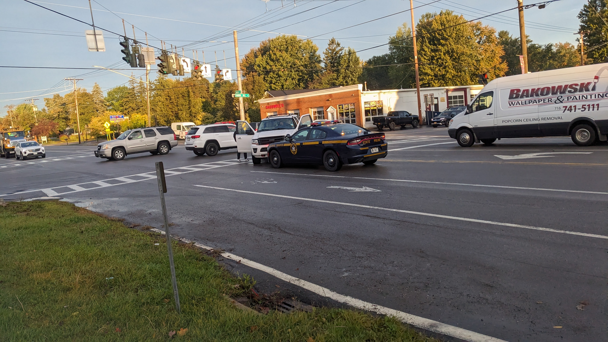

Tim Hortons at Main & Harris Hill: Community Concerns
For context on the power of community voices, please refer to the Clarence Town Board Work Session Minutes from May 14, 2014 (see page 12 of the PDF, which is labeled page 116 in the document). In those minutes, Councilman Casilio himself acknowledged receiving 117 signatures from residents concerned about traffic for another project. This demonstrates that a significant number of resident signatures can be impactful. We must aim to exceed that number to clearly demonstrate strong community opposition to this proposed Tim Hortons.
{kind=link}
As highlighted in recent articles by the Buffalo News, the Bee News, and WKBW, our neighborhood truly believes it is worth more than a cup of coffee.
Neighborhood Impact and Safety Issues
A proposed Tim Hortons at 8503 Main Street, at the corner of Main and Harris Hill, threatens our community. This isn't just another coffee shop; it's a direct threat to an already dangerous intersection and the safety of our residents, especially children.
-
The Main and Harris Hill intersection is a hazardous 5-point configuration. Already a recognized problem for state and county traffic authorities, a new Tim Hortons will only worsen existing congestion.

An example of existing traffic hazards in the area.
-
Its immediate proximity to three churches and two schools means constant pedestrian and vehicle traffic.

School pickup traffic extending into the road, highlighting existing congestion near schools.
-
Alarmingly, vehicles frequently drive on sidewalks at this intersection, creating dangerous conditions. Children, even with a dedicated crossing guard present, have been nearly struck by cars navigating this unsafe intersection.

Example of traffic hazards: A driver going the wrong way on Nottingham Terrace, a one-way street near the intersection.

Sidewalks with no curbs, making it easy for vehicles to drive onto them.

Additional visual proof of vehicles driving on sidewalks during winter conditions.
- A traffic study projects 114 new vehicle trips from this Tim Hortons, yet it was conducted when school was not in session. This severely underestimates peak traffic. Nearby Nativity of Mary church also holds weekday masses, further impacting morning congestion (Clarence Planning Board Minutes, 10/16/24, p. 165-174 for resident anecdotes).
{kind=link}
{kind=link}
{kind=link}
It's worth asking: Who would take responsibility when increased traffic inevitably leads to accidents or injuries, especially involving pedestrians and children?
And would the approving parties or Tim Hortons pledge to regularly clean up the inevitable increase in litter where kids, families, and pets walk daily?
Existing Coffee Shop Locations Nearby:
We strongly encourage supporting our local, community-focused coffee shops and businesses. Choosing them helps foster our unique neighborhood character and strengthens our local economy.
Disclaimer: The creator of this website has no association with these local coffee shops and receives no financial compensation or benefit from their inclusion in this list. They are listed for completeness to demonstrate the existing options, and have not been contacted about this list or expressed any opinions on this matter.
Numerous coffee shops already serve the area, making another unnecessary. Here are some within a short drive:
- Tim Hortons (5390 Genesee St, Lancaster, NY): ~1.4 miles (3 min drive).
- Tim Hortons (9220 Main Street, Clarence, NY): ~1.6 miles (3 min drive).
- ☕ Prominent Coffee Co. (9135 Sheridan Drive, Clarence, NY): ~1.8 miles (3 min drive).
- ☕ Goodrich Coffee & Tea (9450 Main Street, Clarence, NY): ~2.1 miles (5 min drive).
- Starbucks (9430 Main St, Clarence, NY): ~2.1 miles (7 min drive).
- ☕ Great Lakes Coffee Roasters (9560 Main Street, Clarence, NY): ~2.3 miles (5 min drive).
- Tim Hortons (6687 Transit Road, Williamsville, NY): ~2.3-2.5 miles (6-8 min drive).
- Tim Hortons (7860 Transit Road, Williamsville, NY): ~2.3-2.5 miles (6 min drive).
- Tim Hortons (5140 Main Street, Williamsville, NY): ~4.4 miles (11-12 min drive).
- Tim Hortons (1060 Wehrle Drive, Williamsville, NY): ~4.5-4.6 miles (10-11 min drive).
This density confirms existing demand is met. Another coffee shop at this critical intersection is unnecessary and detrimental.
Beyond immediate neighborhood concerns, the added traffic will significantly impact daily commuters on Main Street and Harris Hill Road, increasing congestion and travel times for everyone.
Town Supervisor Casilio's Inconsistent Stance
Town Supervisor Casilio's inconsistent stance on development projects is deeply concerning.
- In 2014, Town Supervisor Casilio vocally opposed a proposal for a Tim Hortons drive-thru facility with a gas fueling station and convenience store at 8250 Main Street, known as "Kenyon's" at the northeast corner of Main Street and Westwood Road. The applicant was proposing to demolish the existing structure to construct a new convenience store with a Tim Hortons drive-thru. This location is approximately 0.2 miles from his residence. He explicitly voiced concerns that "60 customers or more" would cause a "traffic jam" on Westwood Road (Clarence Planning Board Minutes, 05/14/14).
- The lot at 8250 Main Street, which was the subject of Town Supervisor Casilio's past opposition, has sat empty for nearly a decade now. This stands in stark contrast to his often-stated position about ensuring commercial lots are utilized.
- The current proposal at 8503 Main Street projects almost double that traffic (114 vehicle trips), at an intersection far more dangerous and congested than the site he previously opposed. Yet, there seems to be less opposition from him on this significantly higher-impact project.
- Adding to the irony, Town Supervisor Casilio is an executive partner with Casilio, P.A.T. Construction Management Corp. and Construction Services Group of Upstate New York, Inc., with over 40 years of experience in real estate, land development, and construction. This statement contrasts with his public stance that "The Town of Clarence is not in the development business... that area is zoned for a coffee shop. The owner... has a right to ask to open up a coffee business there."
This inconsistency undermines public trust. It is precisely the job of elected representatives to advocate for their constituents, ensure that laws and zoning benefit the community, and to initiate or support changes to regulations when existing rules lead to detrimental outcomes like this. Our elected officials must demonstrate transparency, accountability, and consistent leadership, applying the same standards across all community areas.
Disclaimer: This website is created by a concerned resident to raise awareness about the proposed Tim Hortons at Main & Harris Hill. The views expressed herein are those of the creator and do not necessarily represent the official position of any organization or entity. While efforts have been made to provide accurate information and link to sources, the creator does not guarantee the veracity of all claims and encourages readers to view the provided sources and make their own conclusions. This site is for informational and advocacy purposes only.